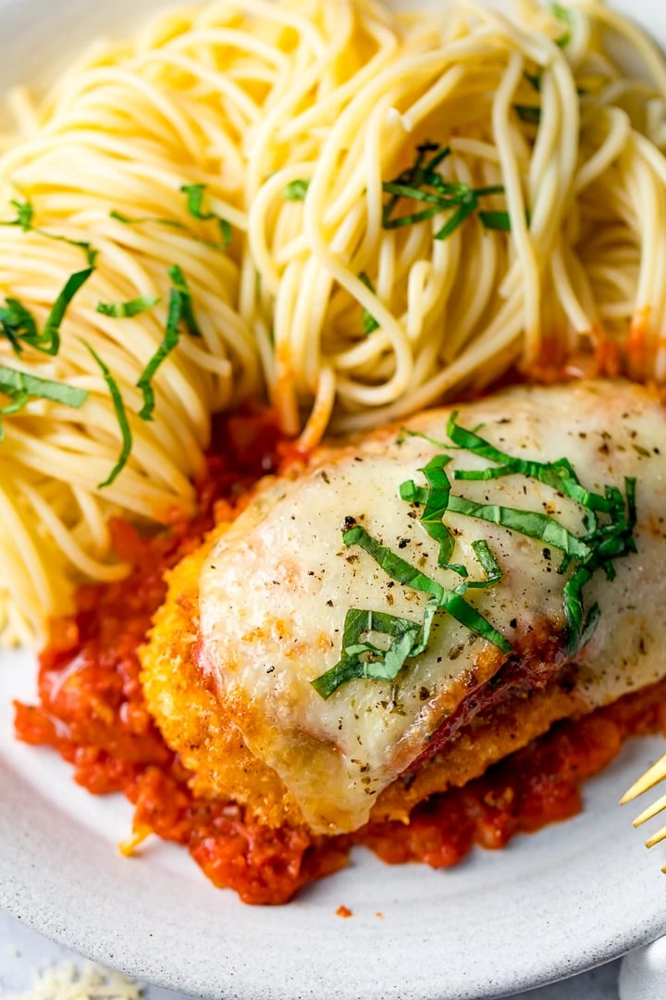

Its that perfect combo of crispy chicken with rich marinara sauce, stretchy melted mozzarella and a nice big pile of spaghetti. carbs+Fat+Salt+Crunch+Tang its got it all!!
Preheat the oven to 200C/400F and put a large baking dish to one side.
Start with the marinara sauce. Heat the olive oil in a medium-sized saucepan over a medium heat. Add the onion and cook for 5-6 minutes, stirring often until softened.
Add the garlic and cook for a further minute.
Add the passata, oregano and sugar. Stir and bring to the boil, then simmer gently for 10 minutes. Turn off the heat.
Meanwhile prepare the chicken. Place the chicken breasts flat on a board and sliced in half through the middle, so you have 4 equal-sized thin fillets. Dust on both sides with the flour.
Add the eggs to a bowl and give them a quick whisk.
Add the panko, paprika, salt, pepper, half the parmesan and the olive oil to a second bowl. Stir together until the panko is evenly coated in the oil.
Dip a chicken fillet in the egg to coat, then dip in the breadcrumbs on both sides until completely covered. Place in the large baking dish and repeat with the remaining chicken fillets, so the chicken fillets are placed in a single layer in the baking dish.
Place in the oven for 10 minutes until the breadcrumbs are lightly browned.
Take the chicken out of the oven and pour ¾ of the marinara sauce around the chicken. Lift up each piece of chicken with a spatula so the sauce spreads and covers the base of the dish and the chicken is sitting on top.
Top the chicken fillets with the remaining marinara sauce. Arrange the slices of mozzarella on top of the chicken and sprinkle on the remaining parmesan and the dried oregano.
Place in the oven for 15-20 minutes until the chicken is golden and piping hot throughout.
Serve the chicken with cooked spaghetti and sprinkle on fresh basil before serving.